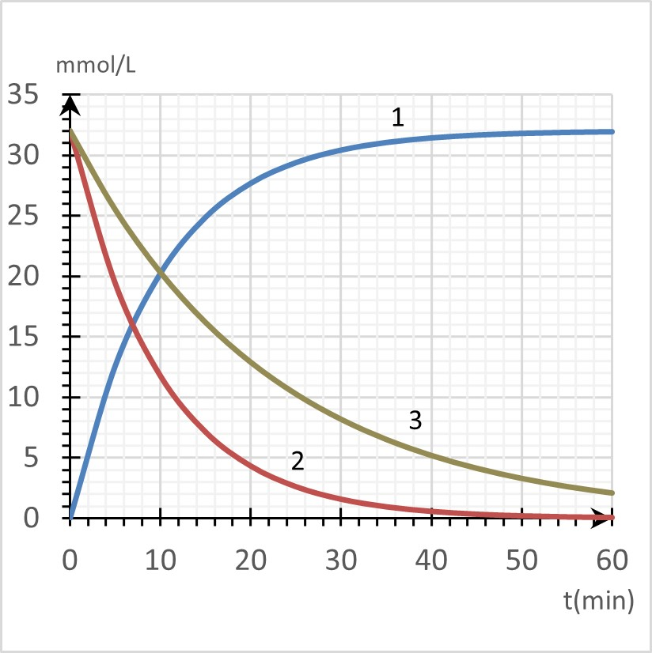

Lycée Taiarapu Nui
Terminale Générale
Terminale Générale
Spécialité Physique – Chimie
2020-2021
2020-2021
C7. Évolution temporelle d'une transformation chimique
Attendus
Vous devez être capable :
Vous devez être capable :
# De reconnaitre une transformation rapide ou lente
# D’identifier à partir des données expérimentales un facteur cinétique
# De citer les propriétés d’un catalyseur
# D’identifier un catalyseur à partir des données expérimentales
# De définir la vitesse volumique d’apparition ou de disparition comme la dérivée par rapport au temps de la concentration
# De déterminer une vitesse volumique à partir de données expérimentales
# De définir le temps de demi-réaction
# Déterminer le temps de demi-réaction à partir des données
expérimentales
# D’identifier à partir des données expérimentales un facteur cinétique
# De citer les propriétés d’un catalyseur
# D’identifier un catalyseur à partir des données expérimentales
# De définir la vitesse volumique d’apparition ou de disparition comme la dérivée par rapport au temps de la concentration
# De déterminer une vitesse volumique à partir de données expérimentales
# De définir le temps de demi-réaction
# Déterminer le temps de demi-réaction à partir des données
expérimentales
Exercice 1

1) Identifier les courbes correspondant à une vitesse d’apparition et à une vitesse
de disparition.
2) Déterminer le temps de demi-réaction à partir de la courbe 1.
3) Même question pour la courbe 2 et 3.
4) Les courbes 2 et 3 sont réalisées dans les mêmes conditions, sauf pour
la température. Commenter.
5) Déterminer graphiquement :
a. Pour la courbe 1, la vitesse volumique à t=0 min et à t=10 min.
S’agit-il d’une vitesse apparition ou de disparition ?
b. Mêmes questions pour la courbe 3 à t=20 min.
Exercice 2
On considère la réaction $S_2 O_8^{2-} (aq)+2I^- (aq)→2SO_4^{2-} (aq)+I_2 (aq)$
où seul le diiode est coloré (orange).
On réalise simultanément trois mélanges :
On réalise simultanément trois mélanges :
| Mélange | 1 | 2 | 3 |
| $[S_2 O_8^{2-}]$ en $mmol.L^{-1}$ | 10 | 20 | 10 |
| $[I^{-}]$ en $mmol.L^{-1}$ | 20 | 40 | 20 |
| Température (°C) | 20 | 20 | 40 |
6) À une date donnée, lequel des mélanges 1 et 2 sera
le plus coloré ?
7) Même question pour les mélanges 1 et 3.
Attendus
Vous devez être capable :
Vous devez être capable :
# De définir une réaction d’ordre 1
# D’établir l’équation différentielle en [A]
# D’établir la loi d’évolution de la concentration au cours du temps pour un ordre 1
# D’identifier, à partir de données expérimentales, si l’évolution d’une concentration suit ou non une loi de vitesse d’ordre 1
# D’établir l’équation différentielle en [A]
# D’établir la loi d’évolution de la concentration au cours du temps pour un ordre 1
# D’identifier, à partir de données expérimentales, si l’évolution d’une concentration suit ou non une loi de vitesse d’ordre 1
Exercice 3
On étudie la réaction entre l’eau et le 2-bromo-2-méthylpropane en
solution à 20°C dans un mélange eau-acétone. Ce type de réaction est
appelé hydrolyse car il y coupure d’une liaison par une molécule d’eau :
$(CH_3 )_3 CBr+H_2 O→(CH_3 )_3 COH+H^++Br^-$
Pour simplifier l’écriture le 2-bromo-2-méthylpropane est noté RBr. On prélève une petite quantité du mélange réactionnel à différentes dates $t$ puis on réalise dose le RBr après avoir réalisé une trempe. Les résultats des différents dosages sont reportés dans le tableau suivant :
$(CH_3 )_3 CBr+H_2 O→(CH_3 )_3 COH+H^++Br^-$
Pour simplifier l’écriture le 2-bromo-2-méthylpropane est noté RBr. On prélève une petite quantité du mélange réactionnel à différentes dates $t$ puis on réalise dose le RBr après avoir réalisé une trempe. Les résultats des différents dosages sont reportés dans le tableau suivant :
| $t(h)$ | 0 | 3 | 6 | 10 | 13 | 18 | 26 | 31 | 40 |
| $[RBr]$ en $mmol.L^{-1}$ | 104 | 90 | 78 | 64 | 54 | 42 | 27 | 21 | 11 |
8) Tracer la courbe de [RBr] en fonction du temps t.
9) Déterminer la vitesse volumique de disparition de RBr à t=0 h et à t=15 h.
10) Comparer les deux vitesses de la question précédente. Quel est le facteur cinétique ainsi
mis en évidence ?
11) Calculer le temps de demi-réaction $t_{1⁄2}$.
12) On fait l’hypothèse que la réaction est d’ordre 1 par rapport à RBr :
$v_{D_{RBr}}=k[RBr]$.
Montrer que $[RBr](t)=[RBr]_0.e^{-kt}$.
Montrer que $[RBr](t)=[RBr]_0.e^{-kt}$.

13) Le tracé de $ln([RBr])$ en fonction de $t$ est donné ci-contre.
En déduire que la réaction
est bien d’ordre 1 et calculer la constante de vitesse $k$.